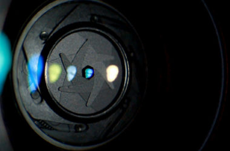

O obturador, a abertura do diafragma e a sensibilidade ISO são os 3 pilares da fotografia que
todos precisam dominar para criar imagens de qualidade!
Cada uma destas técnicas tem a capacidade de ajustar a captura de luz pelo sensor da
câmera, são eles que podem mudar completamente sua foto com apenas um ajuste.
A luz é o elemento mais importante da fotografia, podemos até chamá-la de matéria-prima,
já que sem ela, não tem jeito nenhum de fotografar!
O primeiro passo para dominar o uso da sua câmera e criar seu próprio
estilo de fotografia,
é aprender o básico e entender como elepode te beneficiar.
O mecanismo é posicionado dentro da máquina, logo atrás da lente.
Ele é formado por duas espécies de cortinas, uma delas se abre para
captar a luz pelo tempo determinado previamente e a outra se fecha.
Por tanto, o botão é uma peça extremamente essencial na sua câmera e que
merece muita atenção e cuidado. Existe um problema muito conhecido que
pode afetar este mecanismo, o atraso de obturador.
Ele acontece quando há uma diferença muito grande entre o tempo de
acionamento do botão e da captura da imagem pelo sensor.
Como resultado, esse problema pode fazer com que você perca aquele
clique que dependia de um momento decisivo e único.